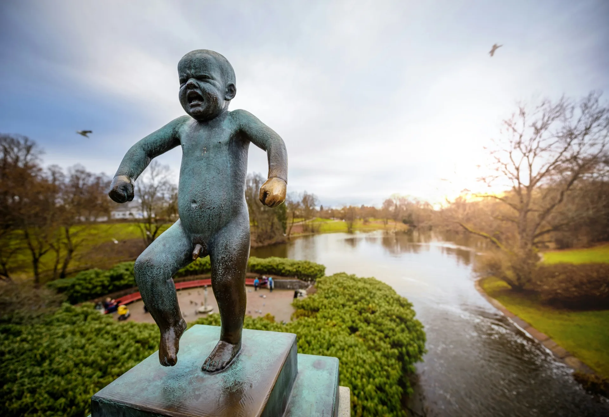
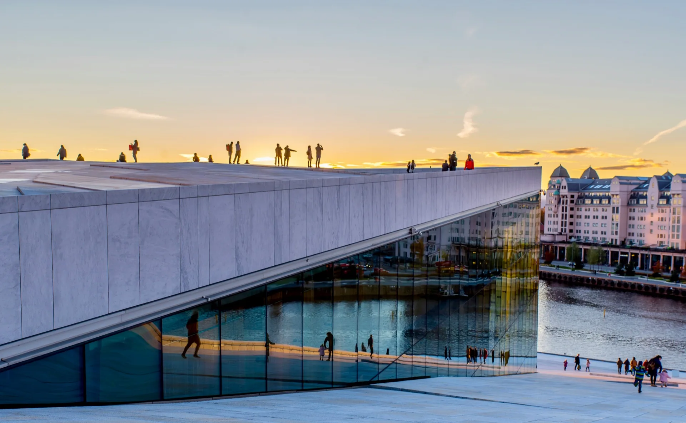
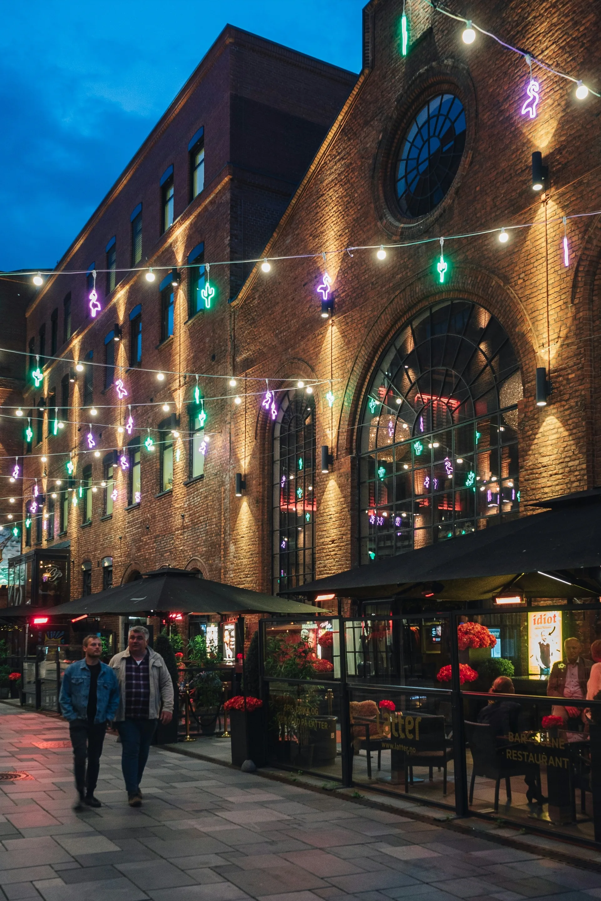

Oslo's landmarks in one ride — the waterfront, Vigeland Park, the Opera House and Grünerløkka
This is Oslo at its most welcoming — a leisurely ride through the beating heart of the Norwegian capital. We keep the pace relaxed so there's always time to pause, take photos and soak it all in.
Your guide picks you up at your hotel and we make our way to the waterfront, rolling along the harbour promenade past Aker Brygge's restaurants and sailboats before sweeping east to the Oslo Opera House. The building's sloping marble roof doubles as a public promenade — a perfect first stop. From there we follow the fjord path through the emerging Fjord City district before heading inland through the quiet streets of St. Hanshaugen.
The second half takes us through Frogner and into Vigeland Park, home to Gustav Vigeland's extraordinary collection of 200-odd bronze and granite sculptures. We finish the loop past the Royal Palace gardens and back down Karl Johans gate — Oslo's main boulevard.
Aker Brygge → Opera House → Bjørvika → St. Hanshaugen → Vigeland Park → Royal Palace → Karl Johans gate. Route is illustrative — exact path varies with your starting location and may be adapted on the day.


Your guide meets you outside your hotel or apartment at the agreed time. No meeting points to find, no transport to organise. The tour normally ends back at your starting point, or another central location by agreement.
Why Oslo Bike Tours
The route takes in Oslo's greatest hits in a single loop: the Oslo Opera House and Bjørvika waterfront, Aker Brygge harbour, the emerging Fjord City district, St. Hanshaugen, Vigeland Sculpture Park with its 200 bronze and granite figures, and the Royal Palace gardens.
Yes. The route runs entirely on flat, paved roads and dedicated cycle lanes through central Oslo. There are no significant climbs. Children who are comfortable cycling on roads are welcome, and the pace is kept relaxed throughout.
City Highlights focuses on the urban core — waterfront, sculpture park, palace and boulevard — and is the shorter of the two at 18 km. The Bygdøy Peninsula tour heads west along the fjord to a quieter, more forested peninsula with museum culture and open water views. Many guests do both on the same trip.
Yes — e-bikes are a great fit for this tour. The route is flat and entirely on paved roads, and there is plenty to look at, so the relaxed pace works in your favour. Gravel bikes, on the other hand, are not well suited here — the route calls for a road or city bike rather than off-road geometry. E-bike rentals are available from NOK 349 when you book.
There are no fixed departure times. Tours run by appointment, so you choose the time that suits your schedule. Morning tours offer quieter roads and softer light on the waterfront. Evening tours in summer benefit from Oslo's long golden hours.
Tours are private and guide availability is limited. Send your preferred date and we'll confirm within 24 hours.